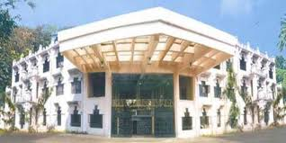

Rajiv Gandhi Institute of technology,named after the late prime minister Sri Rajiv Gandhi,run by the government of kerala,started functioning in 1991
all courses offered by RIT are affliated to APJ abdul kalam Technological university and approved by the ALL INDIAN COUNCIL FOR TECHNICAL EDUCATION(AICTE); the b tech programmes are of 8 semesters(4 year) duration. the B Arch programme is of 10 semesters (5 years) the M Tech programme are of 4 semesters (2 years).The MCA programme is of semesters(2 years)duration.
| course | Department | Intake |
|---|---|---|
| b tech | civil engineering | 66 |
| mechanical engineering | 66 | |
| B Arch | Architecture | 40 |